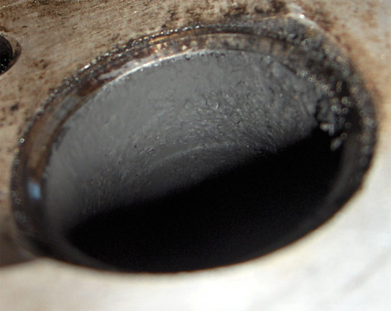
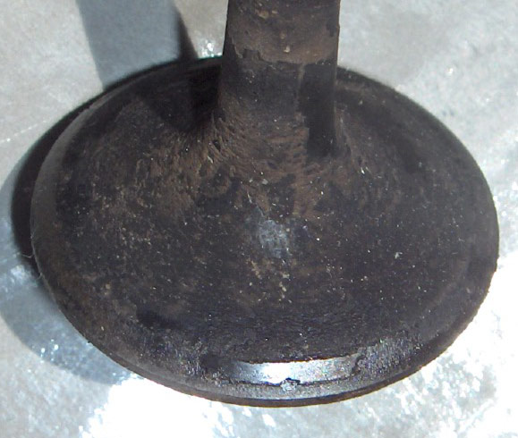
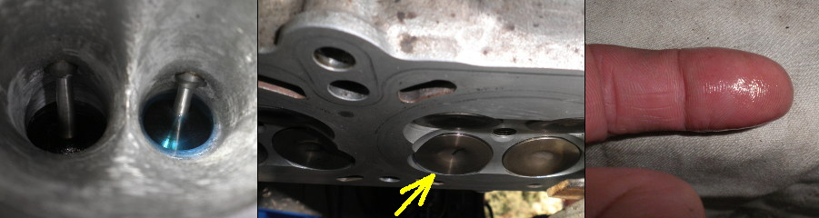

Nell started idling a little rough a couple months back (Sept 2008) - pretty soon after I did the epic ride from Canberra, to PI, to Brisbane & back. Also began to backfire a little. After a month it had progressed to grave difficulty idling, and serious backfiring. I suspected a plug, or maybe a coil. The usual suspects. With a IR thermometer I tracked the problem down to #3. It's exhaust temp was 100C lower than the other 2.
No improvement with a new plug, or coil. So I checked the sync, which was fine.
At 57,500 km I compression tested her. About 850 kPa on 1 & 2 (would have liked to see 1000 or better), but only 100 on #3, after squirting oil in to seal the rings (nothing at all dry!). Bugger. So I had a burnt valve or cracked rings or a burnt piston (as happened to someone else on this forum).
I suspected the injector, as I've not put cleaner in the tank every service. The first time I did it was at 51,000 km, when I realised my fuel consumption was getting out of hand. So I had them tested & cleaned. They were all pretty good (pre-cleaning). #2 had an average spray pattern and a slightly lower flow rate, but that didn't explain the loss of compression. The flow rates, post cleaning, were 160 - 164 ml / minute @ 50% duty. (Those on my 2.5 litre 944 came up at 124 ml / min @ 50% duty)
The tester reckoned my problem could be either carbon build up under the valve seat, or my AFR Tuner running #3 leaner than it should.
The head & barrel came off last weekend (Nov 2008). The rings were all pristine, as were the bores. The top ring gap on #3 was 0.38 mm, on the high side, but adequate. (The gap is not even specified in the manual)
#3 piston was just about clean, while the others had a fair bit of carbon deposited, which is consistent with unburnt fuel in #3 cleaning up the piston.
When I squirted IPA down the exhaust ports, it flowed straight out both valves of #3, while the others sealed fine. So I pulled out my trusty valve spring compressor, turned up a tube to fit over the valve cap, and tried to remove the collets. Couldn't budge it. I consulted the manual to discover that the preload on the springs amounted to about 880 N - almost 90 kg force. No wonder I couldn't compress it. (The VF750 is about 30 kgf)
After a trip down to the local tool shop to pick up a decent G-clamp, and some mods to my tube, the collets came out with ease.
Here's what I found ...
|  |  |
| One of the Valve Seats - A fair bit of carbon deposit, and the seat hasn't been used for a while. |
One of the valves - there is a buildup of carbon which has held the valve off the seat.. |
So, what's happened, I believe, is, she's been running heaps rich - measured AFR 10.5 - 12.5 earlier this year. This resulted in a carbon buildup on the pistons and the valves. After correcting the mixture with the AFR Tuner, the carbon has been slowly burnt off, leaving an ever increasing gap in the valve seat.
I think the moral of this story, is, don't let your engines run too rich for too long, or you'll end up with leaking valves.
Nell dropped down to two cylinders again. Initially at startup for minute or two, but every time she was started the twin thing got longer. At the end of the day,
after 4 starts, she stayed on two.
A quick compression check with some oil squirted down the bores showed that an exhaust valve was leaking again. So my assumption that this problem was due to running
rich was unfounded. The Motty AFR Tuner has fixed the map so this can't be the cause.
The head came off again, the valves were removed and taken to show Chris at Engine Rebuilders in Mitchell. He showed me the deposit buildup on the exhaust valve stem and suggested that this is likely to be holding the valve off of the seat. The deposits most likely come from the oil I've been using for the past 98,000 km. It is not a full synthetic, but a high quality mineral oil blended by a friend. On reflection it is likely to break down at a lower temperature than a synthetic, and that is possibly what has been happening. Initially the deposit builds up on the stem until it holds the valve slightly off of the seat. Carbon then deposits on the seat keeping it sealed and the stem deposits can climb further up. In time, the valve deposits grow too high, become unstable and break away, leaving a gap and creating a leak.
This valve problem appears to be unique to Nell. To the author's knowledge, no other Tornado has had this happen, and it is assumed that the rest are all using Full
Synthetic oil, as per the manufacturer's recommendation.
From now on Nell will use a full synthetic (Penrite MC4-ST 15W50), and time will tell.
From the very first startup, after reconditioning the valves and seats at 98,600, once warmed up, Nell had taken to "spitting-back" through the inlet ports,
ie. backfiring. When it did this in it's youth, this was corrected by richening up the idle mixture, but no amount of adjusting the mixture rich or lean had made one
jot of difference to it since the the valves and seats were last ground.
The final straw came when riding from the Port of Melbourne through the suburbs heading north. Nell would stall after just one backfire whenever she was left to idle.
It was so bad that I relented and switched her off at every red light.
When we got back home I did a leak-down test and listened at each valve with a stethoscope tube. Number two right inlet valve was found to be leaking ever so slightly.
I couldn't hear the leak at the opposite semicircle. Thankfully, the actual loss in cylinder pressure was minimal. With a 50 psi input pressure, the cylinder pressures
in #1 through 3 were 48.0, 47.5 and 48.5, corresponding to a loss of 4%, 5% and 3%, which is considered very good.
So 2R was leaking and had been from the get-go, causing the backfire. I had a chat with my brother, who has an immense knowledge and experience in all things mechanical
and he mentioned having similar problems in a car engine he reconditioned some time back. He had the valves and seats ground and found that some did not seal. He
returned the head and valves only to find them even worse when the task was completed for the second time. The solution to the problem was to lap each offending valve
by hand, and this is what I decided to do with Nell.
|
2R, the valve known to leak (from the leak-down test) |
 |
Well, it's a bit worse than I thought (click the image) |
|  | The test is simply carried out by pouring some kero into the port (left) then waiting. If there is no sign of kero in the combustion chamber after a few minutes, all is well. The right hand picture shows a trace of kero on my finger after wiping it over the valve face. This was after 30 minutes - which I am happy with. There was no trace at 5 minutes. (Only one valve spring was used in the test) |
The valves were sealed by lapping with fine paste. Three quarter turns back and forth, lift, move a quarter turn and repeat three times. It doesn't take much when you are working with (relatively) new grinds.
When all were lapped, cleaned and assembled with both valve springs (880 N !), I left the head overnight with kero in all 6 inlet ports and could find no trace of kero on the inlet valve faces next morning.
The moral of this story is, don't assume that a valve/seat grind will seal straight up. Always test it with some kero after assembling the valve in the head or you may waste
a head gasket.
HOME